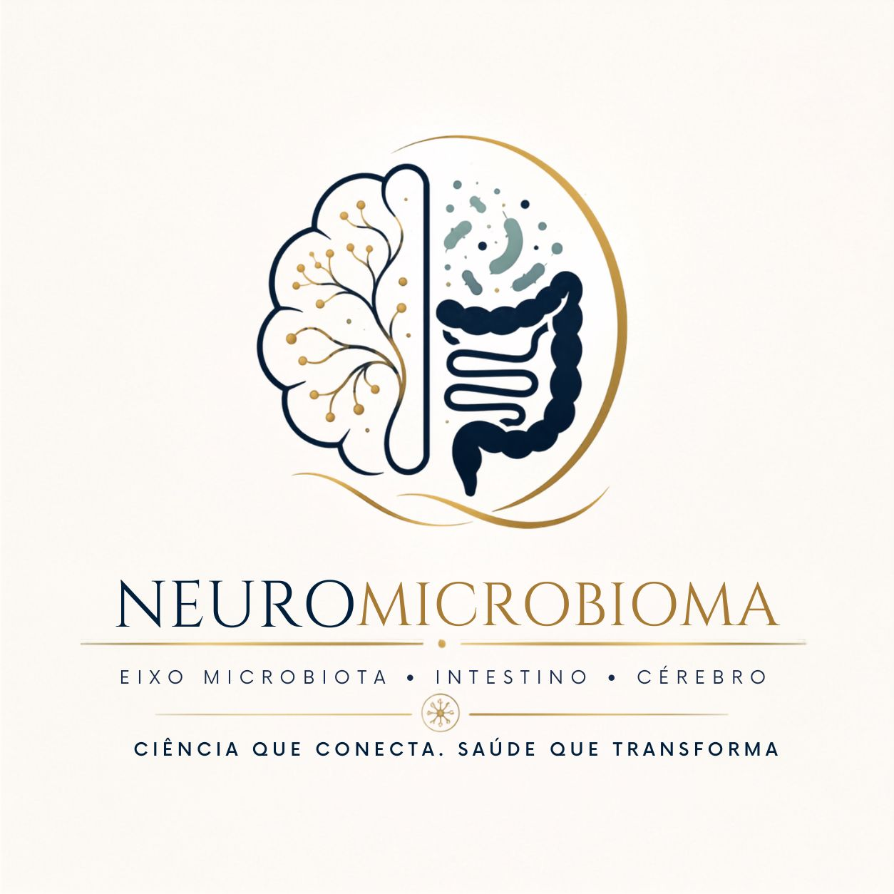

Apresentação em pôster
Estudantes de graduação indicam a modalidade pôster (banner) ao submeter o resumo. Após avaliação e aprovação pela Comissão Científica, os participantes recebem as orientações para preparar o pôster.
1º Simpósio
Ciência que conecta. Saúde que transforma.

Visão geral
Um encontro científico interdisciplinar dedicado às interfaces entre microbioma, intestino, cérebro e saúde mental.
O simpósio reúne pesquisadores nacionais e internacionais convidados, estudantes, professores e profissionais de diferentes áreas para trocar conhecimentos, experiências e perspectivas sobre as interações entre microbiota, organismo e sistema nervoso — estimulando o diálogo e a colaboração científica.
O evento integra a cooperação científica internacional entre a UFPel e a University of Illinois Urbana-Champaign, fortalecida pelo Prêmio Fulbright–ABC 2025 e pelo apoio da FAPERGS.
Convidados
Cronograma
Horários de Brasília (UTC−3).
Chamada de trabalhos
São bem-vindos trabalhos de graduação, iniciação científica, pós-graduação, pesquisa e extensão. O resumo é enviado no próprio formulário de inscrição.
Estudantes de graduação indicam a modalidade pôster (banner) ao submeter o resumo. Após avaliação e aprovação pela Comissão Científica, os participantes recebem as orientações para preparar o pôster.
Apresentação oral dinâmica e objetiva para estudantes de mestrado e doutorado.
Os trabalhos não selecionados para o Scientific Pitch serão apresentados como pôster.
Siga o modelo e as normas de submissão. Todos os resumos aprovados devem ser apresentados durante o evento.
Inscrições
As vagas são limitadas. O certificado é emitido mediante participação nas atividades do evento e apresentação de trabalhos (pôster ou oral).
O preenchimento do formulário não garante a vaga até a confirmação da organização.
O evento convida os participantes a doar ao Projeto Mãos Dadas, da ONG Escritório do Bem, que apoia famílias em situação de vulnerabilidade social no Capão do Leão e em Pelotas.
A doação é voluntária, não é requisito para a inscrição e não é recebida nem administrada pela organização do evento, pela UFPel ou pela FAPERGS.
@maosdadaspelotasLocal do evento
Universidade Federal de Pelotas — Campus Capão do Leão, RS
Auditório de Meteorologia
UFPel — Campus Capão do Leão
Av. Eliseu Maciel · Capão do Leão – RS
A maior parte das opções de hospedagem fica em Pelotas.
Equipe
Profa. Dra. Lucielli Savegnago
Universidade Federal de Pelotas (UFPel)
Profa. Dra. Renata Leivas de Oliveira
Universidade Federal de Pelotas (UFPel)
UFPel
Instituições nacionais
Instituições internacionais
Auditório de Meteorologia — UFPel